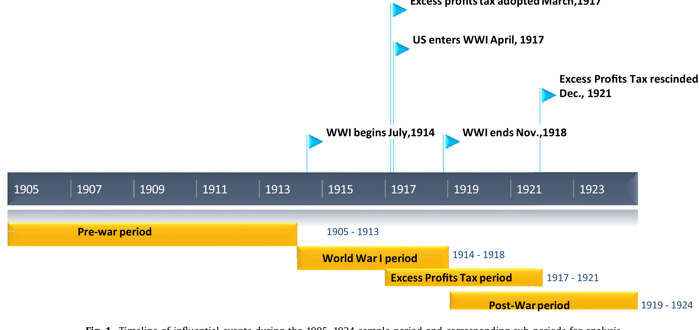
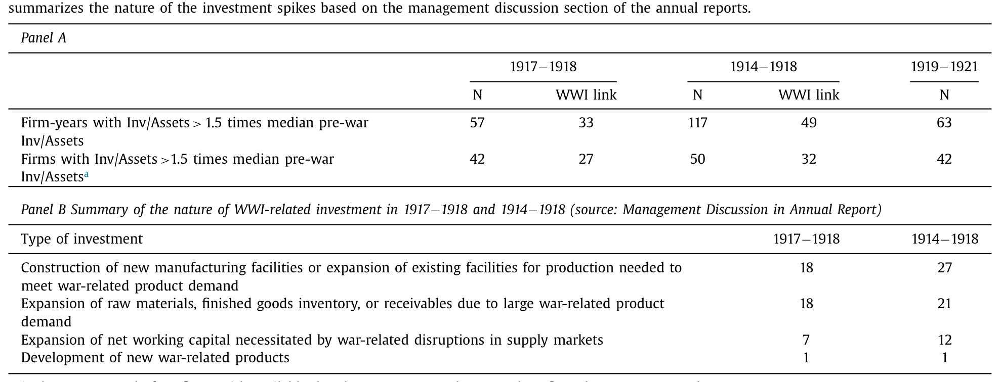
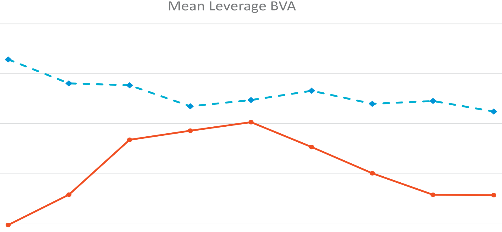
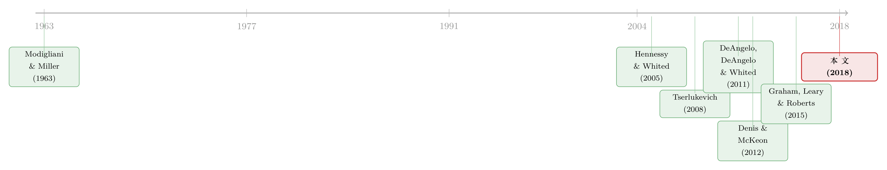

税率明明偏爱股权，他们却偏偏去借钱——一战投资高峰里的资本结构选择
本文读的是 Bargeron, Denis & Lehn (2018, Journal of Financial Economics)：一战前后美国企业为承接战争需求大举投资，恰逢联邦开征「超额利润税」、税制明显偏向股权融资——可这些需要外部资金的公司却几乎一边倒地选择发债而非发股，把账面杠杆推高；战后又把这笔债务系统性地还掉。一个税收说了不算、投资机会的「来与去」说了算的资本结构故事。
1 一个被精心挑出来的「自然实验」
先抛一个看似简单、却让几代公司金融学者争论不休的问题：当一家公司急需外部资金时，它会发股还是发债？
教科书最古老的那条答案来自 Modigliani 和 Miller——既然利息可以税前抵扣，债务就带着一块「税盾」，税率越高，企业越该多借债。顺着这条逻辑，税收是资本结构的第一驱动力。可是过去二十年，一批动态资本结构模型给出了另一种声音：真正牵着杠杆走的，不是税率，而是企业投资机会的动态——当一个又大又急、且注定短暂的投资机会砸下来时，企业会先用「最快、最省事」的方式（往往是债）把钱凑齐，等机会过去、盈利回流，再把这笔债悄悄还掉。
两种说法在平时很难分开，因为现实里「高税率」和「好投资机会」常常缠在一起。要把它们掰开，你需要一个非常苛刻的场景：一个又大又短暂的投资机会冲击，且这个冲击恰好发生在税制偏向股权的年代。如果税收说了算，企业理应发股；如果投资机会的动态说了算，企业会顶着税收的「逆风」去发债。
本文作者找到的，正是这样一个近乎完美的场景——第一次世界大战前后的美国。
接着，一个自然的问题是：战争凭什么算「投资机会冲击」，而那段时间的税制又凭什么「偏爱股权」？这要从两件同时发生的事说起。
2 战争把投资机会砸了下来，税制却把企业往股权推
第一件事，是需求的暴涨。1914 年欧洲开战、1917 年美国参战，欧洲对食品、军火、钢铁的采购把美国从一场衰退里拽了出来，企业疯狂扩产能、囤原料、铺营运资本。作者把这段时间的事件画成了一条时间线（如图 1 所示），并据此切出几个子区间：战前期（1905–1913）、一战期（1914–1918）、超额利润税期（1917–1921）、战后期（1919–1924）。这条时间线之所以重要，是因为它把「投资机会」和「税制」两条线在 1917–1918 这两年精确地叠在了一起。

Figure 1: Timeline of influential events during the 1905–1924 sample period and corresponding sub-periods for analysis
第二件事，就是那条叠上来的税制线——超额利润税（excess profits tax）。1917 年开征、1921 年底废止。它的机理是本文识别的命门，值得说清楚：超额利润税只对「超过投入资本一个『正常回报率』的那部分利润」征税，而股权计入投入资本、债务基本不计入。于是，多发一笔股权 → 投入资本变大 → 免税的「正常回报」额度变大 → 应税的超额利润变小；多借一笔债却换不来这块扩大的免税额度。换句话说，在这几年里，利息抵税那点老式的「债务税盾」被一股更强的力量盖过——税制反过来偏向了股权（这套逻辑可追溯到 Plehn (1920) 对战时超额利润税的分析）。
于是识别的逻辑就立住了：
1917–1918 这两年，是「又大又短暂的投资机会」与「税制偏爱股权」唯一的交集。如果企业在这两年需要外部资金时仍然主要发债，那就等于在税收的逆风里逆行——这是对「税收决定论」最干净的一记反驳。
这正是本文比已有文献（DeAngelo et al., 2011；Denis and McKeon, 2012；Dudley, 2012 等）更进一步的地方：那些研究把杠杆与投资高峰的相关性记录了下来，却没能找到一个外生的投资机会冲击；而一战，恰恰是一个又大、又外生、又注定会过去的冲击。
3 怎么定义一次「投资高峰」
数据这一步走得颇为辛苦。作者从 1905 年在《华尔街日报》有股价的所有美国工业企业出发，剔除公用事业、铁路与矿业，再以能否在 Moody's 手册里拿到足够财务数据为准，最终落到 57 家公开交易的工业企业，样本期 1905–1924。财务数据全靠手工从 Moody's 年鉴里一条条录入，股价取自《商业与金融纪事报》；更难得的是，他们还翻阅了样本公司在 1914–1921 年间发布的 399 份年报（占可能发布总数的 95%），逐字读管理层讨论，记录公司是否把投资、把融资明确归因于战争。
投资被定义为 资本开支 + 营运资本变动。一次「投资高峰（investment spike）」则被这样界定：某公司某年的投资率，超过它战前（1905–1913）中位投资率的 1.5 倍，并且这一年的投资率本身高于 1%。写成式子：
$$ \frac{Inv_{i,t}}{Assets_{i,t}} \; > \; 1.5 \times \operatorname{median}_{1905\le s\le 1913}\!\left(\frac{Inv_{i,s}}{Assets_{i,s}}\right) \quad\text{and}\quad \frac{Inv_{i,t}}{Assets_{i,t}} \; > \; 0.01 $$
这个「以公司自己的战前中位数为基准」的设计很关键——它把每家公司当成自己的对照，避开了「不同公司投资水平天生不同」带来的噪声。
数据说话了。中位投资率从 1914、1915 年的不足 1%，陡然跳到 1916 年的 3.3%、1917 年的 4.8%、1918 年的 3.0%；1919 年短暂回落后，1920 年又冲到 6.5%，1921 年衰退里跌到 −0.8%。按公司数看也是同一个形状：1914–1918 年间，53 家有数据的公司里有 50 家至少出现过一次投资高峰，战时的中位投资高峰比战前中位投资率高出整整 344%。而且这些高峰确实是「战争干的」——年报里把投资明确归因于一战的，在这 50 家里有 32 家，在超额利润税生效的那两个战争年（1917–1918）里则是 42 家中的 27 家（如表 2 所示）。归因最多的一类，是「为满足战争相关需求而新建或扩建生产设施」，多达 27 例。

Table 2
这里有个容易被忽略的细节：作者并不满足于「投资和杠杆相关」这种统计事实，而是用年报里公司自己写下的话去坐实「这次投资是战争逼出来的、是外生的」。定量的尺子（1.5 倍阈值）配上定性的证词（399 份年报），是这篇论文最扎实的地方。
4 反转：税制偏爱股权，钱却从债里来
万事俱备。现在到了最关键的一步——这些投资高峰是怎么融资的？
如果你站在「税收决定论」一边，答案应该是股权：毕竟 1917–1918 年发股能扩大免税额度、压低超额利润税。何况当时纽交所的成交相当活跃（作者用图 3 展示日均成交量），发股在技术上完全可行，企业并非「想发股却发不出去」。
然而数据给出的是一记响亮的反转：当企业内部资金不够、必须动用外部资金时，它们几乎一边倒地选择了发债。
量级有多大？对于那些投资高峰被明确归因于一战、且在 1917–1918 年间需要外部融资的公司，账面杠杆的变动是 0.064——这个数字相对于样本期 0.144 的平均账面杠杆来说，经济意义相当可观（差不多是把平均杠杆抬高了四成多）。而当企业内部资金足以覆盖这次投资高峰时，它们的杠杆并没有显著变化。换句话说，是「外部融资缺口」而非「投资本身」推高了杠杆，而填这个缺口用的是债，不是股。
到这里，故事其实只讲了一半。真正让这篇论文站住脚的，是它接着追问的下半句——这笔债，后来呢？
5 债是「临时」的：战后的系统性去杠杆
动态资本结构模型有一个很漂亮的预言：如果债是为了一个短暂的投资机会而临时举借的，那么一旦机会过去、盈利回流，企业就该把这笔债还掉，杠杆回落。DeAngelo, DeAngelo and Whited (2011) 把这种现象叫做「临时性债务（transitory debt）」。
本文的数据正好给了这个预言一个干净的检验。作者发现：那些在战时靠债务为投资融资、且随后盈利足以覆盖投资的公司，在战后显著地去杠杆、把债还了下去；而战后的杠杆下降，几乎完全集中在这批「战时债务融资」的公司身上，其它公司并没有这种去杠杆。图 4 把这一点画得很直白——战时加杠杆最多的那一小批公司，杠杆先升后降，走出一道清晰的「驼峰」，而对照组则相对平稳（如图 4 所示）。

Figure 4: Yearly average leverage for the ten firms with the largest leverage increases between 1916 and 1919 versus the 19 firms with similar leverag
这道「先升后降」的驼峰，是全文的题眼。它说明战时那波加杠杆，和那波投资一样，本质上是临时的——债务是企业用来吸收一次性投资冲击的缓冲垫，冲击退去，缓冲垫也就收了起来。（关于债务这种「为短暂机会而生、机会过去就还掉」的内在动态，可参见《发债没有回头路：一点发行成本，如何替股东锁住了税盾》与《债，其实一直在动：当「随机发债」补全了信用风险的另一半》。）
更一般地，作者把视野放宽到整个 1905–1924 样本期，做了杠杆变动对投资与盈利的回归，结论一以贯之：年度杠杆变动与投资正相关、与盈利负相关。而且尽管超额利润税期的投资与盈利水平都显著更高，杠杆变动与这两者的关系在税期与非税期之间却没有显著差别——也就是说，那个「偏爱股权」的税制，并没有在数据里留下它本该留下的痕迹。这恰恰是对「税收决定论」最致命的一击。
6 文献脉络
把这篇论文放回它所在的那条河流里，脉络就清楚了。
源头是 Modigliani and Miller (1963)：利息抵税带来债务税盾，税收由此被写进资本结构的第一性原理，催生了后来的权衡理论——税率高，就该多借债。可现实里企业的杠杆远比税盾逻辑所预测的保守，于是一支新的研究转向了动态：Hennessy and Whited (2005) 用结构模型刻画债务的动态调整，Tserlukevich (2008) 问「实物期权能否解释融资行为」，DeAngelo, DeAngelo and Whited (2011) 提出「临时性债务」——企业平时压低杠杆、保留财务弹性，遇到大投资时临时举债、事后回补。
接着，一批实证开始记录「投资高峰」与杠杆、与融资弹性的关系：Denis and McKeon (2012) 研究主动加杠杆与财务弹性，Dudley (2012) 看大型投资项目的资本结构，Graham, Leary and Roberts (2015) 则用一个世纪的数据画出美国企业杠杆的长期变迁。这些工作都指向同一个方向——投资机会的动态，比税收更能解释融资选择——但它们都缺一个外生的投资机会冲击来做干净的因果识别。

本文正是补上了这块拼图：一战是又大、又外生、又注定短暂的投资冲击，而超额利润税恰好制造了一个「偏爱股权」的税收环境。在这个税收和投资机会指向相反方向的特殊窗口里，企业用脚投票，投给了债——也就投给了「投资机会的动态」这一派。（这段一战金融史，还可与《山姆大叔把华尔街领到了缅因街：一战债券如何重塑美国金融》对照着读。）
7 评论与延伸（Q&A + 研究方向）
(a) 几个可能的疑问
Q：超额利润税为什么是偏爱「股权」而不是偏爱「债」？利息不是能抵税吗？
利息确实能抵税，这是老式的债务税盾。但超额利润税的税基是「超过投入资本正常回报的那部分利润」，而股权计入投入资本、债务基本不计入。多发股权会扩大免税的「正常回报」额度，从而压低应税的超额利润；这块好处在战时高税率下盖过了利息抵税。所以净效果是税制偏向股权。
Q：会不会企业不是「不想发股」，而是「发不出股」？
作者专门用纽交所的日均成交量（图 3）说明那几年股票市场相当活跃，发股在技术上可行。而且若真是融资渠道受限，就无法解释为何战后这些公司又能顺畅地还债、调整资本结构。证据更支持「能发股而不发」。
Q：0.064 的杠杆变动，真的算大吗？
相对于样本期 0.144 的平均账面杠杆，0.064 把杠杆抬高了约 44%，经济意义不小。而且这个变动只出现在「需要外部资金」的高峰公司身上；内部资金够用的公司杠杆几乎不动——这种「按是否缺钱分组」的对照，让这个量级更有说服力。
Q：和「财务弹性」「临时性债务」这些概念是什么关系？
本文是它们的一个干净实证案例。临时性债务的核心预言是「为短暂机会临时借债、事后回补」，本文的战后去杠杆「驼峰」（图 4）正是这条预言在历史数据里的实现。区别在于，本文额外提供了一个与税收逆向的环境，从而能把「投资动态」从「税收」里干净地剥出来。
Q：57 家公司、还是一百年前的数据，外部有效性够吗？
这是最该警惕的地方。样本小、年代久、行业偏工业，结论能否外推到今天存疑。但作者的目标不是估一个可外推的弹性，而是用一个稀有的「税收—投资反向」窗口做一次判别性检验；对这个目的而言，样本的「特殊」恰恰是它的价值所在。
Q：那这是不是说税收对资本结构「不重要」？
不能这么读。本文证伪的是「税收是融资决策的首要决定因素」这一强命题；它并不否认税盾的存在，只是说当一个又大又急的投资机会出现时，投资机会的动态会盖过税收的考量。
(b) 几个可能的研究问题与提案
- 把「临时性债务」搬到公司债的久期与赎回条款上
- 【经济故事】若战时债务本就是为短暂机会临时举借、计划事后回补，那么企业应当偏好短久期、可提前赎回的债务工具，以便机会退去时低成本地去杠杆。本文只看了杠杆水平，没拆债务的「形状」。
-
【可行性】中。现代样本可用
Mergent FISD的发行层数据，识别可借助行业级、外生的投资机会冲击（如能源价格、国防订单）。一战样本则需回到年报手工辨认债务条款，工作量大但 doable。 -
外资持有人在「投资高峰融资」中的角色
- 【经济故事】当本土股权市场因税收而被「嫌弃」时，缺口由谁补上？若部分由外国投资者承接债务，则税收冲击会通过持有人结构外溢到信用利差与流动性。
-
【可行性】低到中。一战样本几乎无持有人微观数据；现代可用 TIC、
eMAXX等持有人数据，把「外生投资冲击 → 发债 → 外资承接比例 → 二级市场流动性」串成一条链，识别需要一个干净的投资冲击工具。 -
超额利润税废止（1921 年底）作为一次「断点」
- 【经济故事】税制在 1921 年末突然取消，构成一个时间上的断点：若税收真的边际重要，废止前后企业的股/债选择应有可观测的跳变；本文的整体回归提示「无显著差异」，但尚未做断点设计。
-
【可行性】中。可用 1919–1924 的年度面板做事件研究或差分；难点在于废止与战后复苏、衰退（1921）在时间上重叠，需要小心剥离混淆因素。
-
「债务缓冲垫」假说与流动性危机的连结
- 【经济故事】若企业惯于用临时债务吸收投资冲击、事后回补，那么当外部冲击同时压低盈利与再融资能力时，这层缓冲垫可能反成脆弱性来源。
- 【可行性】高。现代信用市场数据丰富，可把本文的「投资高峰—临时债务—事后去杠杆」框架与债券二级市场的流动性指标对接（思路可参见《差点死掉的那个市场：一场公司债流动性危机的微观解剖》）。
我的判断。 这篇论文最漂亮的地方，不在于多复杂的计量，而在于场景的选择：它找到了一个税收和投资机会指向相反方向的历史窗口，让本来纠缠在一起的两股力量第一次能被分开看。手工读 399 份年报、用公司自己的话坐实「投资外生于战争」，这种笨功夫给识别加了很重的分量。对识别我有两点保留：其一，所谓「外部融资缺口」是用内部资金是否够用来界定的，而这本身依赖于盈利的度量，存在内生分组的隐忧；其二，57 家工业企业、一百年前的制度环境，外推性必须谨慎，结论更适合读作「对税收决定论的一次判别性反驳」，而非一个可外推的弹性。后续我最想看到的，是把债务的期限与赎回结构也纳进来——如果「临时性债务」是真的，那么这些战时债不仅该在事后被还掉，它们一开始就该被设计得「容易还」。
参考文献
- Bargeron, L., Denis, D., Lehn, K. (2018). Financing investment spikes in the years surrounding World War I. Journal of Financial Economics 130(2), 215–236.
- DeAngelo, H., DeAngelo, L., Whited, T.M. (2011). Capital structure dynamics and transitory debt. Journal of Financial Economics 99(2), 235–261.
- DeAngelo, H., Roll, R. (2015). How stable are corporate capital structures? Journal of Finance 70(1), 373–418.
- Denis, D., McKeon, S. (2012). Debt financing and financial flexibility: evidence from pro-active leverage increases. Review of Financial Studies 26(6), 1897–1929.
- Dudley, E. (2012). Capital structure and large investment projects. Journal of Corporate Finance 18(5), 1168–1192.
- Graham, J.R., Leary, M.T., Roberts, M.R. (2015). A century of capital structure: the leveraging of corporate America. Journal of Financial Economics 118(3), 658–683.
- Hennessy, C.A., Whited, T.M. (2005). Debt dynamics. Journal of Finance 60(3), 1129–1165.
- Modigliani, F., Miller, M. (1963). Corporate income taxes and the cost of capital: a correction. American Economic Review 53(3), 433–443.
- Plehn, C.C. (1920). War profits and excess profits taxes. American Economic Review 10(2), 283–298.
- Rockoff, H. (2005). Until it's over, over there: The US economy in World War I. In Broadberry, S. (Ed.), The Economics of World War I. Cambridge University Press, 310–343.
- Tserlukevich, Y. (2008). Can real options explain financing behavior? Journal of Financial Economics 89(2), 232–252.